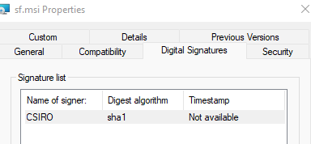
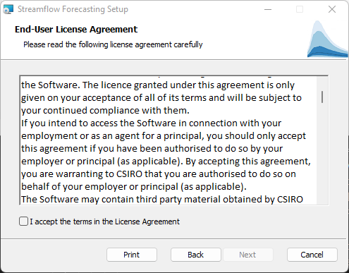
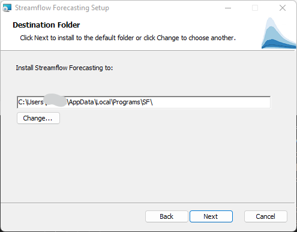
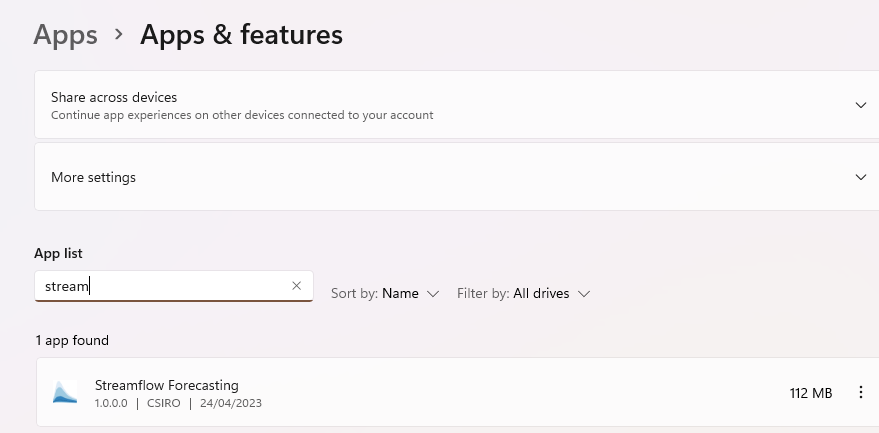
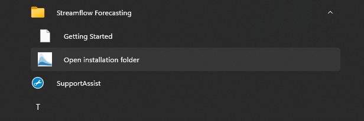
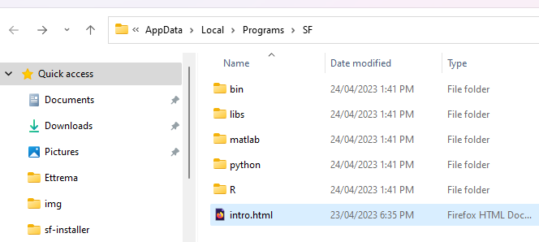
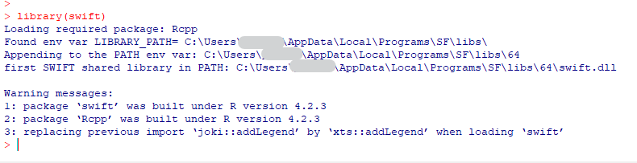

Installation: Windows
Introduction
This document is a short guide to install on Windows the CSIRO ensemble streamflow forecasting software stack that includes tools known as SWIFT2, FoGSS, CHyPP.
As of 2023-04-24 it is recommended to use a Windows Installer (MSI file). The manual setup is kept in this document but is deprecated.
Installation with the Windows installer
The windows installer v1.0 is available upon prior agreement from this web page. You can see always see the web page but cannot download the installer without prior agreement (user credentials).
You should have access to a windows installer file “sf.msi” of around 40MB. This installer should work on at least Windows 10 or later. It may work on older versions of Windows but has not been tested.

The installer is signed with a cryptographic signature certified by a third party, which should facilitate the approval from your IT department if required.

This document outlines the steps to perform for a “normal” user without particularly elevated privileges on the installation machine. It is possible to install as an Administrator for all users, but this is not documented here.
An installation consists of two steps in practice. The installer installs native libraries, sets environment variables, and copies installable packages for R, python, MATLAB. You can then use the latter to install these packages in your environment. There are many ways to manage R and python environments, so this step cannot be handled automatically by the windows installer.
Windows installer
Execute the file sf.msi (or sf-x.y.z.msi)

Do read the license agreement. If you have access to this installer, you should already have had prior discussions with the product distributors to agree on the scope of use of the products.

As a user-level installation you will be prompted with a conventional default location. You may change the destination folder if required.


The installation will typically take a few seconds to proceed.


Checking the base installation
One way to check the installation worked as desired is to open a new command prompt. The command where chyppapp should return a path.

Then chyppapp --help should work and display a help output.

Uninstalling
The installer is well integrated in the Windows system, and to repair or uninstall the stack you can use the “Add and Remove software” panel of Windows. Uninstalling will remove all installed files and revert changes to the environment variables PATH and LIBRARY_PATH

Manual installation of libraries
The manual procedure to install the stack is deprecated. Preferably use the windows installer as in the previous paragraphs.
Some longstanding users may still want to stick to a manual process, hence this legacy is kept here.
You will have been given one or more links to the location of C++ compiled libraries (windows DLLs), and R and/or Python packages. You should have access to at least libs.7z. Other archives files (such as include.7z) may be present and used only for development. They are not necessary for most users.
The top level folder where you should install these libraries is not prescribed. This document uses c:\local for historical reasons, but this may not be a logical or feasible place depending on your organisational IT environment. You can replace it with another folder location in the rest of this document.
Installing packages
You can choose to install various higher level languages: R, Python, Matlab, C# and potentially others.
This section documents R and Python. You can install either, or both, depending on your needs. Matlab is also summarily documented.
This section mostly assumes you are installing from the Windows Installer, not manually. You may need to adapt a few things if you installed manually.
If you are using Windows 10, from the start menu, go the “S” section:
If you are using Windows 11, from the start menu, go to “All apps”

In the “S” section you will find a “Streamflow Forecasting” folder, with a shortcut to the installation folder.

This will open the installation folder which includes the additional files for R, python and matlab.

R packages
R packages are available in source and precompiled “win.binaries” form. The latter is easy and fast. Installing from source is out of scope of this document. However, Windows binary packages are version dependent. The installer includes packages for R 4.2.x, the current latest stable version of R. If you need another version of the packages, please contact the authors.
There are multiple ways to install R. If you have a corporate software management system, chances are the latest stable release of R (currently 4.2.x) is readily available.
Open an R terminal.
Check with the command .libPaths() that the first folder is user specific, so that you will be able to install the packages.
[1] "C:/Users/xxxyyy/AppData/Local/R/win-library/4.2"
[2] "C:/Program Files/R/R-4.2.1/library"It is likely R would likely prompt you if do not already have a personal library, and would created one in the process; for instance when adding a package:

Then after that:
An alternate possibility is to specify a custom library directory via the R_LIBS environment variable.
Adding an R_LIBS environment variable
This step is optional, and possibly deprecated.
While not required, you can set up an additional R library location, specified via an environment variable R_LIBS at the machine or user level. This can facilitate access to R packages for all users and upgrades to newer version of R down the track. you can install the packages in the other library folders that R creates (user-specific if you do not have admin rights)
Installing an R package
Then you will need the root name of the small R library folder where R packages are, e.g. “C:\Users\xxxyyy\AppData\Local\Programs\SF\R” if you have chosen the default option for an destination folder. You can also get the path via the shortcut named “Open installation folder” (start to type open in the start menu will likely get you there:)
Adapt the following command with the folder name and it should install the streamflow forecasting packages and their third party dependencies
install.packages(c('calibragem', 'mhplot', 'efts', 'swift',
'qpp'),
repos=c('file:///C:/Users/xxxyyy/AppData/Local/Programs/SF/R',
'https://cran.csiro.au'), type='win.binary')Upon successful installation you should be able to load the swift package:

The command ?swift should open an HTML page in a browser. At the bottom of the page you can find a shortcut to the package index.

The package Index page should also include a link to the introductory vignettes:

Python packages
Python environments
We strongly advise you to use python virtual environments to execute these tools via python.
There are various methods for these, but typically venv (virtual environments) or conda
This section documents the process using conda.
There are various options to set up a suitable python environment to run. This document outlines using conda or its replacement mamba. If you do not have any pre-existing environments, we recommend you use mambaforge, but you may have already it installed on your Windows box by e.g. your IT department installation management software.
This document assumes you start from the base environment, for instance if you installed miniconda:
(base) C:\Users\xxxyyy>conda env list
# conda environments:
#
base * C:\Users\xxxyyy\Miniconda3If you have installed Mambaforge, look for “miniforge” in the Windows start menu:
We recommend you use the program mamba, a newer and faster drop-in replacement for conda. This is optional.
You may already have mamba installed (e.g. if you installed mambaforge). You can check the command where mamba returns paths to mamba.bat and/or mamba.exe files:
Otherwise you can install mamba in the base environment with:
conda install -c conda-forge mambaInstalling Python packages
Below remember to replace mamba by conda if you have not installed mamba.
set env_name="hydrofc"
mamba create -n %env_name% -c conda-forge python=3.9 xarray cffi pandas numpy matplotlib ipykernel jsonpickle netcdf4 seaborn
REM note to self seaborn used in swift2 sample notebooks, so somewhat optional.It was once observed on some machines that downloading the package metadata for a conda channel was painfully slow:
Hopefully you will not encounter this issue, but if you do there may be a workaround. If there are already cached package metadata, it is possible to skip downloading newer package metadata with the -C option. For instance:
mamba install -c conda-forge -C xarray
Register the new conda environment as a “kernel” for jupyter notebooks
conda activate %env_name%
python -m ipykernel install --user --name %env_name% --display-name "HFC"From here on all commands are done from within this new conda environment
You may already have jupyter-lab installed in another conda environment. You may use it to run ‘hydrofc’ notebooks. If not, install jupyter-lab in this new environment with:
mamba install -c conda-forge jupyterlabYou may need to install some additional conda packages depending on the notebooks you are using.
We can now install “our” packages. we can install from ‘wheels’, or from source code (for developers)
Two dependencies refcount and cinterop are on pypi, but should also be in the zip archive as wheels as well; prefer the latter.
If installed from the Windows installer, you should have the wheels in a folder such as “C:\Users\xxxyyy\AppData\Local\Programs\SF\python” if you have chosen the default option for an destination folder.
To install “wheels”, if you got them from a zip file:
cd C:\tmp\sf
7z x python.7zor
cd C:\Users\xxxyyy\AppData\Local\Programs\SF\pythonIn that folder, there may be a batch file installpkgs.bat that can be called to install the streamflow forecasting packages in your new conda environment.
Otherwise, a more manual approach is to adapt the following lines:
:: Adapt the following to the versions you have.
pip install --force-reinstall --no-deps refcount-0.9.3-py2.py3-none-any.whl
pip install --force-reinstall --no-deps cinterop-0.9.0-py2.py3-none-any.whl
pip install --force-reinstall --no-deps uchronia-2.3.7-py2.py3-none-any.whl
pip install --force-reinstall --no-deps swift2-2.3.7-py2.py3-none-any.whl
pip install --force-reinstall --no-deps fogss-0.3-py2.py3-none-any.whlMatlab functions
This section is a draft, indicative only.
Our MATLAB bindings are known to work very well, but the requirements from MATLAB for C/C++ compilers can be fiddly to figure out and set up, and this section has not been fully validated recently.
If installed from the Windows installer, you should have the MATLAB functions in a folder such as “C:\Users\xxxyyy\AppData\Local\Programs\SF\matlab” if you have chosen the default option for an destination folder.
You will find bindings for SWIFT and FoGSS.
C/C++ compiler Visual Studio
If you have Visual Studio with the C++ compiler installed on your machine, chances are that MATLAB can detect and use it. Otherwise using the MinGW64 toolchain has also been successfully tested.
Installing Mingw64
Read the MATLAB Support for MinGW-w64 C/C++ Compiler page. You will find some information on versions of GCC you need depending on the version of MATLAB you are using.
Head to Mingw-w64 and the download section for “MingW-W64-builds”
Older versions of MATLAB may require versions of GCC that are more difficult to obtain. Around 2017 MATLAB required GCC version 5.3 which appears harder to obtain as of 2023. Users with older versions of MATLAB may find useful material in this MinGW-w64 - for 32 and 64 bit Windows Files on Sourceforge. This is indicative only and download and use is for you to judge. As a hint, for matlab 2017 an installer version x86_64-5.3.0-posix-seh-rt_v4-rev0 was needed.
Compiling the MEX code for swift
In order to capture error messages from the swift library the matlab code needs a bit of MEX code. At the matlab prompt:
setenv('MW_MINGW64_LOC', 'C:\Users\xxxyyy\prog\mingw-w64\x86_64-5.3.0-posix-seh-rt_v4-rev0\mingw64')
cd('C:/src/csiro/stash/swift/bindings/matlab/interop')
mex -L"C:/localdev/libs/64" -lswift registerSwiftExceptionCallback.cpp
%% I seemed to need the addpath calls for createSwiftPrototype to work
bindingsLocation = 'C:/src/csiro/stash/swift/bindings/matlab';
addpath(fullfile(bindingsLocation, 'datatypes'));
addpath(fullfile(bindingsLocation, 'native'));
addpath(fullfile(bindingsLocation, 'interop'));
addpath(fullfile(bindingsLocation, 'external'));
addpath('c:/localdev/libs/64');
addpath('c:/local/libs/64');
cd('C:/src/csiro/stash/swift/bindings/matlab/native')
createSwiftPrototype()